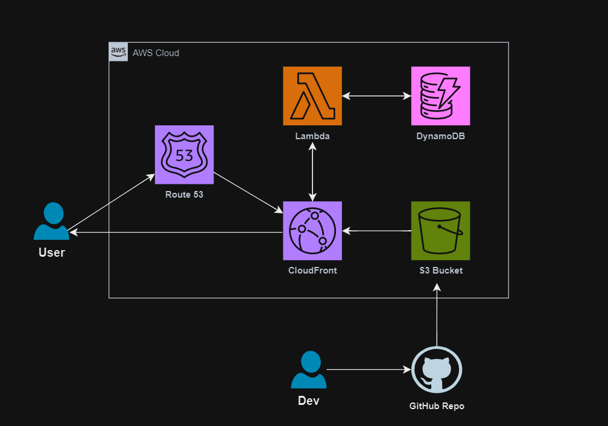

The Premier Cloud Skills Showcase
Welcome to the era where your resume extends beyond paper, reflecting your technical skills through innovative projects. The Cloud Resume Challenge, conceived by Forrest Brazeal, is a modern rite of passage for those aiming to excel in the cloud sector. This project requires you to build a resume website with a simple visitor counter using various cloud services and tools to power it, demonstrating proficiency in AWS, IaC, HTML, CSS, JavaScript, and more. It's an immersive journey through coding, cloud architecture, security, and continuous deployment, culminating in a digital portfolio that showcases your hands-on experience with cutting-edge technologies.
1. Crafting the Web Presence: My journey with HTML and CSS started in the MySpace era, sparking a passion for web design that influenced my career. Having been an entrepreneur since 19, I've always recognized the importance of a solid online presence, leading me to create numerous websites over the years for myself and others. For the challenge, I chose to draw on my years of experience, further enhancing my skills through going the extra mile and completing an online frontend bootcamp. I hand-coded my portfolio website from scratch, setting a personal benchmark and demonstrating a lifelong commitment to learning and passion for web development. Oh and yes the visitor counter was added in too at the bottom of this blog!
2. The Backbone: Terraform and AWS: With a solid academic background in Cloud Computing, I was eager to expand my skills with Terraform and AWS, essential tools in the industry. Terraform's learning curve was steep, but I persevered, taking several courses to understand its interaction with AWS services. My approach was selective, integrating the best practices and strategies from each resource into a cohesive Terraform plan. This deep dive into Terraform wasn't just about learning a new tool; it was about embracing the complexities of cloud architecture and infrastructure as code.
3. Security and Communication: IAM, Roles, and Policies: With certifications in Security+, AWS Cloud Practitioner, Network+, and a B.S. in Cloud Computing, I approached the challenge with a nuanced understanding of security and service intercommunication. Orchestrating the interaction between services through IAM policies and roles, I ensured that every configuration was a deliberate decision, informed by best practices and a deep understanding of potential vulnerabilities. My approach balanced robust security with functionality, creating a resilient and adaptable architecture that reflected a comprehensive skill set and understanding of cloud architecture.
4. Lightning-Fast Delivery: AWS CloudFront: Recognizing the importance of speed and efficiency, I utilized AWS CloudFront to distribute my site through a Content Delivery Network (CDN), ensuring fast load times and a seamless user experience worldwide.
5. Continuous Innovation: GitHub Actions and Jenkins: To maintain a dynamic and up-to-date website, I integrated GitHub Actions with Jenkins for a robust CI/CD pipeline. This setup automated updates to the S3 site, ensuring that the latest changes were always live without manual intervention.
6. Establishing a Digital Foothold: Route53, Namecheap, and DNS Tools: To finalize my digital presence, I adeptly managed DNS records through Route53, integrating it seamlessly with my Namecheap domain. I further personalized my space by creating a subdomain exclusively for this blog post within Route53 (that's why you'll see added "cloud" in front of anibarro.dev at the top of your page while viewing this blog). Using 'dig' DNS tools, I meticulously tested and validated the functionality of both domain and subdomain, ensuring their correct configuration and reliability. This strategic management of services highlights the meticulousness and precision required in cloud infrastructure, culminating in a distinctive and reliable digital identity.
In conclusion, the Cloud Resume Challenge is more than just building a portfolio with a visitor counter. It's about integrating a plethora of services, security measures, and deployment strategies to create something impactful and representative of one's skill, creativity, and technological prowess. It's a thorough examination of your skills, providing a singular opportunity to differentiate yourself in the tech industry, a challenge I thoroughly enjoyed.